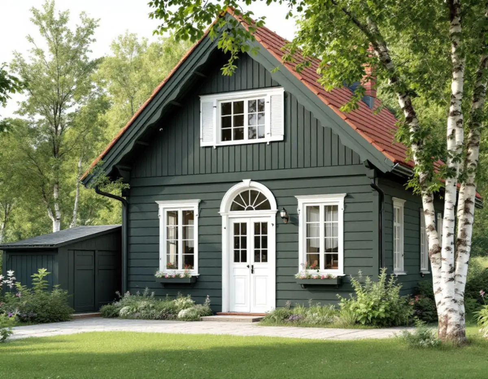
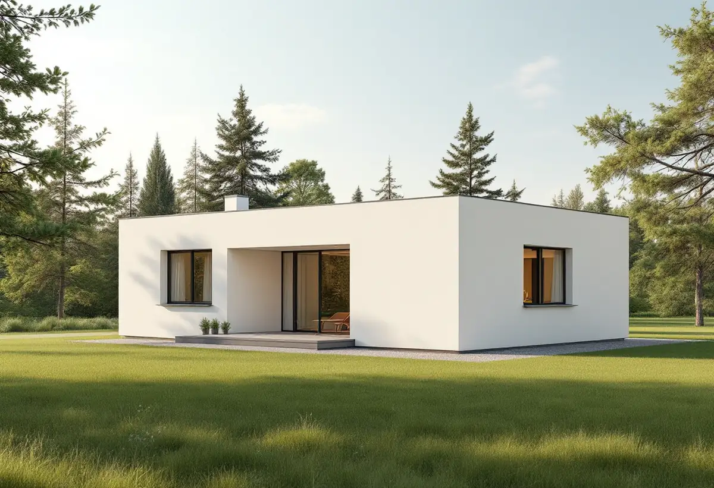
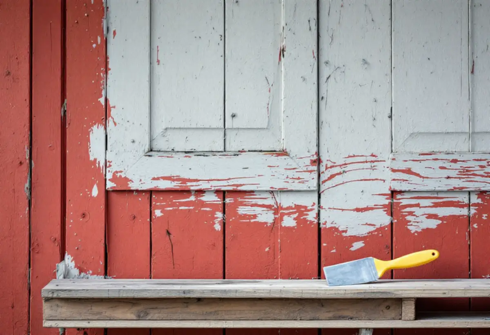

Webbkartan
Kulturmiljöprogram, detaljplan och riksintressen kontrolleras för fastigheten.
En villa i Tullinge kan vara nationalromantisk från 1910-talet, ett kataloghus från 1920-talet eller ett putsat funkishus, och varje epok har sina material och sin färgsättning. Botkyrka kommun räknar dessutom ett byte av kulör som en fasadändring. Geal Entreprenad AB målar om fasader på villor och radhus i Botkyrka och utgår från husets epok när färgtyp och kulör väljs.

Enligt Botkyrkas kulturmiljöprogram öppnade Tullinge järnvägsstation 1903, och det var starten för att Tullinge kunde bli ett villasamhälle. Den tidiga exploateringen sköttes av Tullinge AB, och på 1920-talet planlades egnahemsområdet Hamra söder om järnvägen för tjänstemän och arbetare vid AB Separators gjuteri.
Programmet beskriver Tullinge villaområde som representativt för villabyggandet under 1900–1940-talen, och det är framför allt bebyggelsen från den perioden som är kulturhistoriskt intressant. Vid Tullingesjön finns villor i nationalromantisk och jugendinspirerad stil, och i egnahemsområdet dominerar kataloghus.

Kulturmiljöprogrammet beskriver de nationalromantiska villorna från 1900–1910-talen med branta takfall, liggande fasadpanel, småspröjsade fönster och vitmålade fönsterfoder. Kataloghusen kom på 1920-talet och spreds snabbt till villasamhällena. Från 1930–40-talen kommer enkla volymer med slätputsade fasader eller stående locklistpanel.
Folkhemmets villor från 1940–50-talen beskrivs med putsarkitektur under 1940-talet och fasadtegel under 1950-talet. En puts, en liggande panel och en locklistpanel kräver olika färgtyper och olika förarbete, och därför börjar vi med att bestämma vilken epok huset hör till.
För Tullinge villaområde skriver kulturmiljöprogrammet att villor med bevarad ursprunglig karaktär ska värnas och att ändringar ska göras med respekt för huvudbyggnadens karaktärsdrag. Fasader, tak, fönster, entrépartier och balkonger ska ges en tidstypisk utformning.
Vid en fasadmålning betyder det att färgsättningen helst ska spegla husets tid. Riksantikvarieämbetet ger samma råd ur teknisk synvinkel: vid ommålning bör man i de flesta fall hålla sig till samma färgtyp som tidigare, och äldre färgsättning och kulörval bör bevaras eftersom de i regel är typiska för husets epok.
Botkyrka kommun förklarar att byte av kulör räknas som fasadändring, och ger exemplet att måla om en byggnad från röd till vit. På ett en- eller tvåbostadshus är fasadändringen normalt lovfri, men utökad lovplikt kan gälla om byggnaden eller området är särskilt värdefullt eller om detaljplanen kräver lov.
Kommunen hänvisar till sin webbkarta. Under den blå fliken Bibliotek och kultur finns lagret Kulturmiljöprogram, under Bygga och bo lagret Detaljplaner och under Riksintressen lagret Kulturmiljövård. Vi går igenom kartan för din fastighet innan en ny kulör föreslås.
Riksantikvarieämbetet påpekar att trä som ska målas måste vara torrt och att fuktkvoten inte får överstiga 15 procent vid målningstillfället. Vid ommålning av en linoljemålad panel tvättas ytan, spikar som krupit upp slås in, lös färg skrapas bort och skadade partier bättras innan slutstrykningen. Myndigheten skriver att fasaden kan tvättas med soda och vatten, och att dagens luftföroreningar gör tvätten nödvändig även där man förr inte tvättade före ommålning.
Om måleri i Botkyrka i övrigt kan du läsa under målare i Botkyrka.

Kulturmiljöprogram, detaljplan och riksintressen kontrolleras för fastigheten.
Husets epok, fasadmaterial och nuvarande färgtyp går vi igenom.
Förarbete, färgtyp och antal strykningar redovisas.
Ny kulör stäms av mot reglerna innan den beställs.
Tvätt, skrapning, bättring och strykning i rätt färgtyp.
Vi går igenom fasaderna och snickerierna med dig.
Utvändig målning av ett småhus som du äger och bor i räknas som rotarbete hos Skatteverket. Avdraget gäller arbetskostnaden, inte färgen.
Avdraget är högst 30 procent av arbetskostnaden, högst 50 000 kronor per person och år och högst 75 000 kronor tillsammans med rutavdrag. Material och resor ger inget avdrag. Geal drar avdraget direkt på fakturan.
Fasadernas yta och material, hur mycket som behöver skrapas och bättras, färgtyp, antal strykningar och ställning. Efter ett gratis platsbesök får du ett skriftligt kostnadsförslag.
Fasad, fönster och invändig målning.
Målare i Stockholm →Takbyte, takbesiktning och plåtarbeten.
Takläggare i Botkyrka →Tullinge, Uttran och Tumba.
Takrenovering i Botkyrka →Kartlagren, checklistan och vattnet.
Attefallshus i Botkyrka →Flytt av badrum, stammar och frånluft.
Badrumsrenovering i Botkyrka →Nytt hus, utfart och byggarbetsplats.
Byggföretag i Botkyrka →Fönstertyper per epok i Botkyrkas villor.
Fönsterbyte i Botkyrka →Radhusen i Tuna.
Fönsterrenovering i Botkyrka →Kataloghus, källargolv och trägolv.
Golvläggare i Botkyrka →Kök i villor och radhus, för att bo kvar.
Köksrenovering i Botkyrka →Tidstypiska kulörer från 1960-tal till gamla byar.
Målare i Botkyrka →Rännor, stuprör och plåttak i Botkyrka.
Plåtslagare i Botkyrka →Altan, plank och förråd i villaområdena vid järnvägen.
Snickare i Botkyrka →Material, solpaneler och takkupor.
Takbyte i Botkyrka →Ny tapet på träfiberskivor och gamla lager.
Tapetsering i Botkyrka →Villorna i Tullinge, Uttran och kartan.
Tillbyggnad i Botkyrka →Tullingehuset i omgångar.
Totalrenovering i Botkyrka →